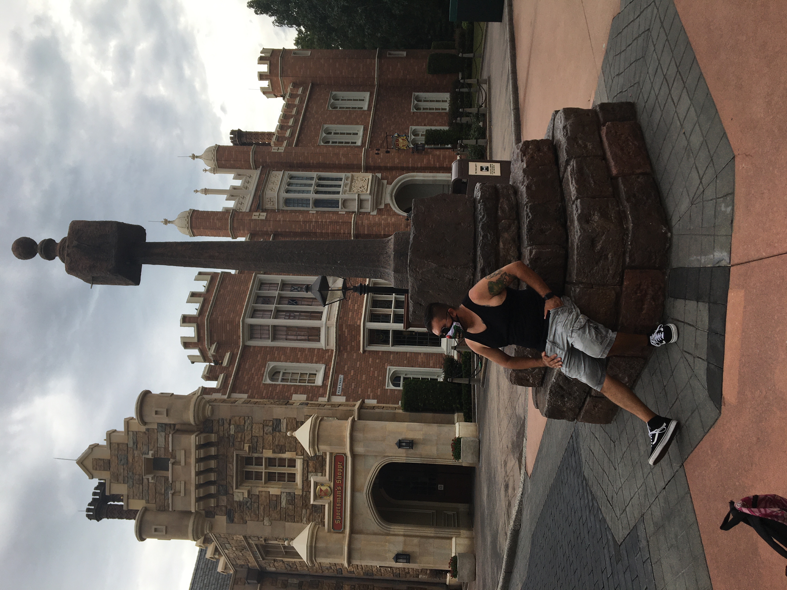

Hello, my name is Daniel Burford, and I’m a Texas native from San Antonio. I graduated from Madison High School in 2012 and then attended San Antonio College Regional Fire Academy. This marked the beginning of my life as a first responder. For the next ten years, I learned the field of first responding in some capacity. During this journey, Wiggles, the Chihuahua, has been along the whole ride with me. This journey taught me much about myself and my ability in extreme duress. It also taught me that, in that lifestyle, I need to rely on outside help to get through tough days, whether it be a family pet like Wiggles, a family member, a close friend, or even a hobby of some sort.
On tough days, I would get home and sit and overthink on situations trying to find better ways I could have handled them. Yes, learning from your mistakes is always a good thing but letting your mistakes take over your life is not. So on those tough days I would go over those events and think for a minute then turn to my hobbies. This mind frame helped me build a garden, It also brought my mind back to a passion I had before my journey started technology. One thing lead to another and in 2021 I attended UTSA’s coding boot camp, and 6 months later I was considered a web developer / software engineer, with a background with photography.
